Snakes of India
364 snake species are recorded in India in SnakeList: 122 venomous and 242 non-venomous, from 14 families.
- 364species
- 122venomous
- 242non-venomous
- 14families
Species
Showing 364 species
- No photo yetAbor Hills Kukri SnakeOligodon melanozonatus
 Anamala Pit ViperCraspedocephalus anamallensis
Anamala Pit ViperCraspedocephalus anamallensis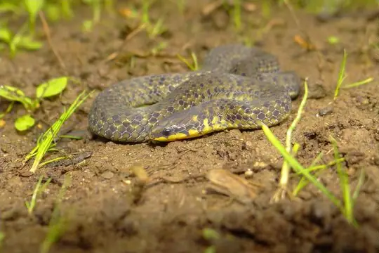
Anamalai wood snakeXylophis mosaicus- No photo yetAnamally Earth SnakeUropeltis macrorhyncha
 Andaman Bronze-backDendrelaphis andamanensis
Andaman Bronze-backDendrelaphis andamanensis Andaman Cat SnakeBoiga andamanensis
Andaman Cat SnakeBoiga andamanensis Andaman CobraNaja sagittifera
Andaman CobraNaja sagittifera- No photo yetAndaman Island Worm SnakeArgyrophis oatesii
 Andaman KeelbackFowlea tytleri
Andaman KeelbackFowlea tytleri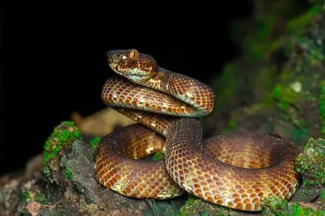
Andaman pitviperTrimeresurus andersonii Andaman wolf snakeLycodon hypsirhinoides
Andaman wolf snakeLycodon hypsirhinoides- No photo yetAndaman Wolf SnakeLycodon tiwarii
- No photo yetAndaman Worm SnakeGerrhopilus andamanensis
 Anderson’s Slug SnakePareas andersonii
Anderson’s Slug SnakePareas andersonii Annulated Sea SnakeHydrophis cyanocinctus
Annulated Sea SnakeHydrophis cyanocinctus- No photo yetAnomalous Sea SnakeHydrophis anomalus
- No photo yetApte’s slender snakeTrachischium apteii
 Arabian Gulf Sea SnakeHydrophis lapemoides
Arabian Gulf Sea SnakeHydrophis lapemoides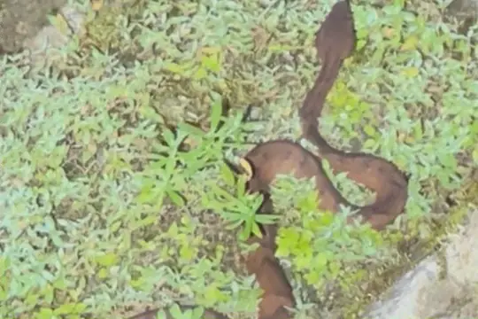
Arunachal PitviperTrimeresurus arunachalensis- No photo yetArunachal Rain SnakeSmithophis arunachalensis
 Ashok's Bronzeback Tree SnakeDendrelaphis ashoki
Ashok's Bronzeback Tree SnakeDendrelaphis ashoki Ashy Kukri SnakeOligodon cinereus
Ashy Kukri SnakeOligodon cinereus- No photo yetAssam KeelbackHerpetoreas pealii
 Assam Kukri SnakeOligodon catenatus
Assam Kukri SnakeOligodon catenatus Assamese Cat SnakeBoiga quincunciata
Assamese Cat SnakeBoiga quincunciata Bamboo PitviperTrimeresurus erythrurus
Bamboo PitviperTrimeresurus erythrurus Banded KraitBungarus fasciatus
Banded KraitBungarus fasciatus Banded KukriOligodon arnensis
Banded KukriOligodon arnensis Banded Racer (fasciolata)Argyrogena fasciolata
Banded Racer (fasciolata)Argyrogena fasciolata Banded Racer (fasciolatus)Lycodon fasciolatus
Banded Racer (fasciolatus)Lycodon fasciolatus Banded Wolf SnakeLycodon fasciatus
Banded Wolf SnakeLycodon fasciatus Bar-necked KeelbackFowlea schnurrenbergeri
Bar-necked KeelbackFowlea schnurrenbergeri Barred Wolf SnakeLycodon striatus
Barred Wolf SnakeLycodon striatus Beaked Worm SnakeGrypotyphlops acutus
Beaked Worm SnakeGrypotyphlops acutus Beddome's Black Earth SnakeMelanophidium punctatum
Beddome's Black Earth SnakeMelanophidium punctatum Beddome's Cat SnakeBoiga beddomei
Beddome's Cat SnakeBoiga beddomei Beddome's Coral SnakeCalliophis beddomei
Beddome's Coral SnakeCalliophis beddomei- No photo yetBeddome's Earth SnakeUropeltis beddomii
- No photo yetBeddome's Worm SnakeGerrhopilus beddomii
- No photo yetBelcher's Sea SnakeHydrophis belcheri
- No photo yetBelgaum Worm SnakeIndotyphlops exiguus
 Bella Rat SnakeArchelaphe bella
Bella Rat SnakeArchelaphe bella Bhupathy's ShieldtailUropeltis bhupathyi
Bhupathy's ShieldtailUropeltis bhupathyi Bibron's Coral SnakeCalliophis bibroni
Bibron's Coral SnakeCalliophis bibroni Bicatenate UropeltisUropeltis bicatenata
Bicatenate UropeltisUropeltis bicatenata- No photo yetBighead Sea SnakeHydrophis annandalei
 Bindee keelbackRhabdophis bindi
Bindee keelbackRhabdophis bindi Black Coral SnakeCalliophis nigrescens
Black Coral SnakeCalliophis nigrescens Black Slug SnakePareas modestus
Black Slug SnakePareas modestus Black-banded Sea SnakeHydrophis nigrocinctus
Black-banded Sea SnakeHydrophis nigrocinctus Blackbelly Worm-eating SnakeTrachischium fuscum
Blackbelly Worm-eating SnakeTrachischium fuscum Blue KraitBungarus candidus
Blue KraitBungarus candidus- No photo yetBluebelly Kukri SnakeOligodon melaneus
 Blyth's Reticulate SnakeBlythia reticulata
Blyth's Reticulate SnakeBlythia reticulata Boie's Mud SnakeHypsiscopus plumbea
Boie's Mud SnakeHypsiscopus plumbea Bombay Earth SnakeUropeltis macrolepis
Bombay Earth SnakeUropeltis macrolepis- No photo yetBombay Sea SnakeHydrophis mamillaris
 Boulenger's BronzebackDendrelaphis bifrenalis
Boulenger's BronzebackDendrelaphis bifrenalis Boulenger's Earth SnakeUropeltis myhendrae
Boulenger's Earth SnakeUropeltis myhendrae- No photo yetBraid SnakePlatyceps ladacensis
 Brook's Sea SnakeHydrophis brookii
Brook's Sea SnakeHydrophis brookii- No photo yetBrougham's Earth SnakeUropeltis broughami
 Brown Spotted PitviperProtobothrops mucrosquamatus
Brown Spotted PitviperProtobothrops mucrosquamatus Brown Trapezoid SnakeSmithophis bicolor
Brown Trapezoid SnakeSmithophis bicolor Brown Vine Snake (anomala)Ahaetulla anomala
Brown Vine Snake (anomala)Ahaetulla anomala Brown-speckled WhipsnakeAhaetulla pulverulenta
Brown-speckled WhipsnakeAhaetulla pulverulenta Buff Striped KeelbackAmphiesma stolatum
Buff Striped KeelbackAmphiesma stolatum Burmese PythonPython bivittatus
Burmese PythonPython bivittatus Calamaria Reed SnakeLiopeltis calamaria
Calamaria Reed SnakeLiopeltis calamaria- No photo yetCamorta Island Stripe-necked SnakeGongylosoma nicobariensis
 Cantor's Kukri SnakeOligodon cyclurus
Cantor's Kukri SnakeOligodon cyclurus- No photo yetCantor's Narrow-headed Sea SnakeHydrophis cantoris
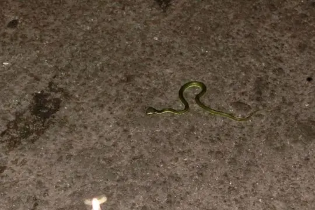
Cantor's Pit ViperTrimeresurus cantori Cantor’s black-headed snakeSibynophis sagittarius
Cantor’s black-headed snakeSibynophis sagittarius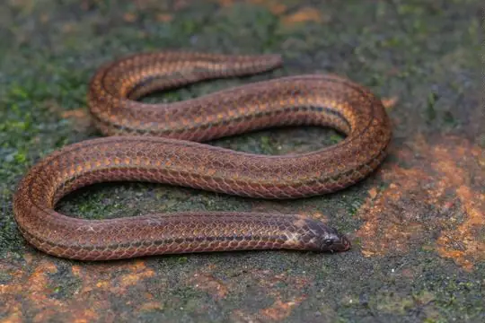
Captain's Wood SnakeXylophis captaini Cardamom Hills Earth SnakeRhinophis fergusonianus
Cardamom Hills Earth SnakeRhinophis fergusonianus Castoe's CoralsnakeCalliophis castoe
Castoe's CoralsnakeCalliophis castoe Cave RacerElaphe taeniura
Cave RacerElaphe taeniura Central Asian CobraNaja oxiana
Central Asian CobraNaja oxiana- No photo yetCentral Nicobar Pit ViperTrimeresurus mutabilis
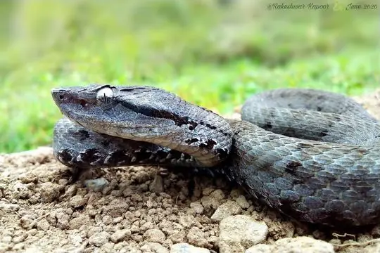
Chamba PitviperGloydius chambensis- No photo yetCheckered KeelbackXenochrophis piscator
 Chequered KeelbackFowlea piscator
Chequered KeelbackFowlea piscator Chin Hills KeelbackHebius venningi
Chin Hills KeelbackHebius venningi Chinese Keelback Water SnakeTrimerodytes percarinatus
Chinese Keelback Water SnakeTrimerodytes percarinatus Chinese Mountain Pit ViperOvophis monticola
Chinese Mountain Pit ViperOvophis monticola Collared CatsnakeBoiga nuchalis
Collared CatsnakeBoiga nuchalis Collared Reed Snake (pavimentata)Calamaria pavimentata
Collared Reed Snake (pavimentata)Calamaria pavimentata- No photo yetCollared Sea SnakeHydrophis stricticollis
- No photo yetColombo Wolf SnakeLycodon anamallensis
 Common Bamboo ViperCraspedocephalus gramineus
Common Bamboo ViperCraspedocephalus gramineus Common Cat SnakeBoiga trigonata
Common Cat SnakeBoiga trigonata Common KraitBungarus caeruleus
Common KraitBungarus caeruleus Common Many-tooth SnakeSibynophis collaris
Common Many-tooth SnakeSibynophis collaris Common Mock ViperPsammodynastes pulverulentus
Common Mock ViperPsammodynastes pulverulentus Common RingneckGongylosoma scriptum
Common RingneckGongylosoma scriptum Common sea kraitLaticauda laticaudata
Common sea kraitLaticauda laticaudata Common SeasnakeHydrophis schistosus
Common SeasnakeHydrophis schistosus Common Slug SnakePareas monticola
Common Slug SnakePareas monticola Common Wolf Snake (aulicus)Lycodon aulicus
Common Wolf Snake (aulicus)Lycodon aulicus Common Wolf Snake (capucinus)Lycodon capucinus
Common Wolf Snake (capucinus)Lycodon capucinus Coral Red Kukri SnakeOligodon kheriensis
Coral Red Kukri SnakeOligodon kheriensis- No photo yetCrying KeelbackHebius lacrima
- No photo yetDarjeeling Worm SnakeIndotyphlops meszoelyi
- No photo yetDark Blue-Banded Sea SnakePolyodontognathus caerulescens
 Daudin's BronzebackDendrelaphis tristis
Daudin's BronzebackDendrelaphis tristis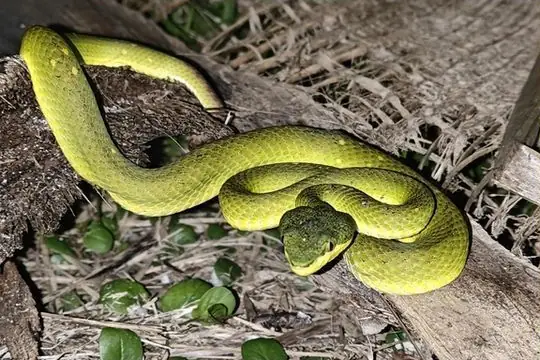
David's pitviperTrimeresurus davidi Deccan Wolf SnakeLycodon deccanensis
Deccan Wolf SnakeLycodon deccanensis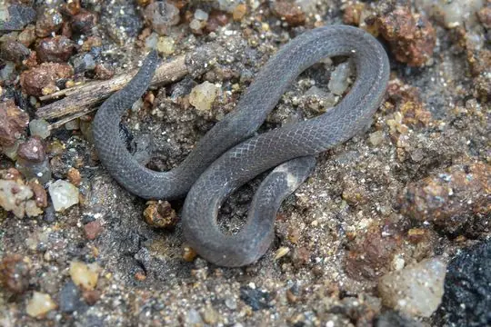
Deepak's Wood SnakeXylophis deepaki Diadem SnakeSpalerosophis diadema
Diadem SnakeSpalerosophis diadema Diard's BlindsnakeArgyrophis diardii
Diard's BlindsnakeArgyrophis diardii Dog-faced Water SnakeCerberus rynchops
Dog-faced Water SnakeCerberus rynchops Dog-toothed Cat SnakeBoiga cynodon
Dog-toothed Cat SnakeBoiga cynodon- No photo yetDoria's Green SnakePtyas doriae
 Dwarf SeasnakeHydrophis caerulescens
Dwarf SeasnakeHydrophis caerulescens Eastern bronzeback tree snakeDendrelaphis proarchos
Eastern bronzeback tree snakeDendrelaphis proarchos Eastern Cat SnakeBoiga gocool
Eastern Cat SnakeBoiga gocool- No photo yetEastern Ghats SnakeRhinophis goweri
 Eastern Russel's ViperDaboia siamensis
Eastern Russel's ViperDaboia siamensis Eastern Trinket SnakeElaphe cantoris
Eastern Trinket SnakeElaphe cantoris Elliot's Earth SnakeUropeltis ellioti
Elliot's Earth SnakeUropeltis ellioti English common name not availableElaphe hodgsoni
English common name not availableElaphe hodgsoni- No photo yetEstuarine Sea SnakeHydrophis obscurus
- No photo yetFew-scaled Worm SnakeGerrhopilus oligolepis
- No photo yetFletcher's Worm SnakeIndotyphlops fletcheri
 Forskal Sand SnakePsammophis schokari
Forskal Sand SnakePsammophis schokari Forsten's Cat SnakeBoiga forsteni
Forsten's Cat SnakeBoiga forsteni Gammie's Wolf SnakeLycodon gammiei
Gammie's Wolf SnakeLycodon gammiei Gerard's water snakeGerarda prevostiana
Gerard's water snakeGerarda prevostiana Giri's Bronzeback Tree SnakeDendrelaphis girii
Giri's Bronzeback Tree SnakeDendrelaphis girii Glossy-bellied RacerPlatyceps ventromaculatus
Glossy-bellied RacerPlatyceps ventromaculatus Golden Flying SnakeChrysopelea ornata
Golden Flying SnakeChrysopelea ornata Gore's Bronzeback (biloreatus)Dendrelaphis biloreatus
Gore's Bronzeback (biloreatus)Dendrelaphis biloreatus Graceful RacerPlatyceps gracilis
Graceful RacerPlatyceps gracilis Gray Cat SnakeBoiga siamensis
Gray Cat SnakeBoiga siamensis Gray's Kukri SnakeOligodon dorsalis
Gray's Kukri SnakeOligodon dorsalis Greater Black KraitBungarus niger
Greater Black KraitBungarus niger Greater SeasnakeHydrophis major
Greater SeasnakeHydrophis major Green Bamboo Leaf Pit ViperTrimeresurus medoensis
Green Bamboo Leaf Pit ViperTrimeresurus medoensis Green Cat SnakeBoiga cyanea
Green Cat SnakeBoiga cyanea Green Rat Snake (nigromarginata)Ptyas nigromarginata
Green Rat Snake (nigromarginata)Ptyas nigromarginata Green Trinket SnakeGonyosoma prasinum
Green Trinket SnakeGonyosoma prasinum Green Vine Snake (nasuta)Ahaetulla nasuta
Green Vine Snake (nasuta)Ahaetulla nasuta- No photo yetGunther's Blind SnakeArgyrophis bothriorhynchus
- No photo yetGünther's Burrowing SnakePlectrurus guentheri
- No photo yetGünther's Earth SnakeUropeltis liura
 Günther's Many-tooth SnakeSibynophis bistrigatus
Günther's Many-tooth SnakeSibynophis bistrigatus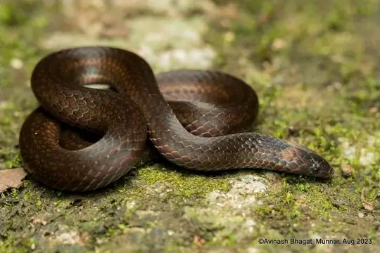
Günther's Mountain SnakeXylophis stenorhynchus Günther's Reed SnakeLiopeltis frenata
Günther's Reed SnakeLiopeltis frenata- No photo yetGünther's sea snakeMicrocephalophis cantoris
 Günther's Vine SnakeAhaetulla dispar
Günther's Vine SnakeAhaetulla dispar Habu Pit ViperProtobothrops himalayanus
Habu Pit ViperProtobothrops himalayanus- No photo yetHardwick's Water SnakeHomalopsis hardwickii
 Himalayan KeelbackHerpetoreas platyceps
Himalayan KeelbackHerpetoreas platyceps Himalayan PitviperGloydius himalayanus
Himalayan PitviperGloydius himalayanus Himalayan Stripe-necked SnakeLiopeltis rappi
Himalayan Stripe-necked SnakeLiopeltis rappi Horseshoe Pit-viperCraspedocephalus strigatus
Horseshoe Pit-viperCraspedocephalus strigatus- No photo yetHorseshoe PitviperTrimeresurus strigatus
 Hubei KeelbackRhabdophis nuchalis
Hubei KeelbackRhabdophis nuchalis Hump-nosed MoccasinHypnale hypnale
Hump-nosed MoccasinHypnale hypnale- No photo yetHutton's PitviperTropidolaemus huttoni
 Indian Black Earth SnakeMelanophidium wynaudense
Indian Black Earth SnakeMelanophidium wynaudense Indian CobraNaja naja
Indian CobraNaja naja Indian Coral SnakeCalliophis melanurus
Indian Coral SnakeCalliophis melanurus Indian Egg-eaterBoiga westermanni
Indian Egg-eaterBoiga westermanni Indian Flying SnakeChrysopelea taprobanica
Indian Flying SnakeChrysopelea taprobanica Indian Rock PythonPython molurus
Indian Rock PythonPython molurus- No photo yetIndian Smooth SnakeCoronella brachyura
 Indo-Chinese Rat SnakePtyas korros
Indo-Chinese Rat SnakePtyas korros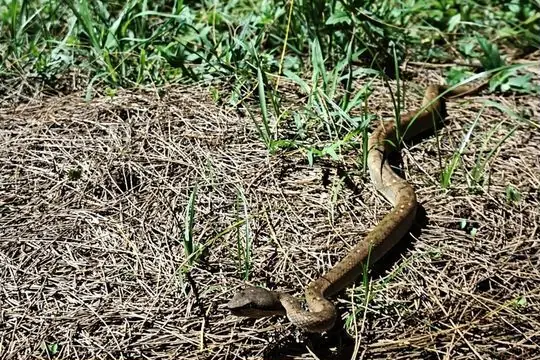
Island Pit ViperTrimeresurus labialis Jerdon's Kukri SnakeOligodon venustus
Jerdon's Kukri SnakeOligodon venustus Jerdon's Many-tooth SnakeSibynophis subpunctatus
Jerdon's Many-tooth SnakeSibynophis subpunctatus Jerdon's PitviperProtobothrops jerdonii
Jerdon's PitviperProtobothrops jerdonii- No photo yetJerdon's Sea SnakeHydrophis jerdonii
- No photo yetJerdon's Worm SnakeIndotyphlops jerdoni
 Jerdon’s Shieldtail SnakeUropeltis jerdoni
Jerdon’s Shieldtail SnakeUropeltis jerdoni Joseph's RacerPlatyceps josephi
Joseph's RacerPlatyceps josephi Karinthandan Earth SnakeRhinophis karinthandani
Karinthandan Earth SnakeRhinophis karinthandani Karnataka BronzebackDendrelaphis chairecacos
Karnataka BronzebackDendrelaphis chairecacos- No photo yetKarnataka Burrowing SnakePseudoplectrurus canaricus
 Karnataka WhipsnakeAhaetulla farnsworthi
Karnataka WhipsnakeAhaetulla farnsworthi Kaulback's Lance-headed PitviperProtobothrops kaulbacki
Kaulback's Lance-headed PitviperProtobothrops kaulbacki- No photo yetKeeled vine snakeProahaetulla antiqua
 Kerala Burrowing SnakePlectrurus aureus
Kerala Burrowing SnakePlectrurus aureus Kerala burrowing snakePlecturus aureus
Kerala burrowing snakePlecturus aureus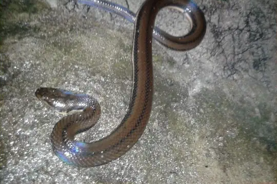
Kerala Mud SnakeDieurostus dussumieri Kerala ShieldtailUropeltis ceylanica
Kerala ShieldtailUropeltis ceylanica Khaire's Black ShieldtailMelanophidium khairei
Khaire's Black ShieldtailMelanophidium khairei- No photo yetKhase Red SnakeStoliczkia khasiensis
 Khasi Hills Trinket SnakeGonyosoma frenatum
Khasi Hills Trinket SnakeGonyosoma frenatum Khasi KeelbackHebius khasiensis
Khasi KeelbackHebius khasiensis King CobraOphiophagus hannah
King CobraOphiophagus hannah- No photo yetKloss' Sea SnakeHydrophis klossi
 Kukri SnakeOligodon affinis
Kukri SnakeOligodon affinis Laotian Wolf SnakeLycodon laoensis
Laotian Wolf SnakeLycodon laoensis- No photo yetLarge-headed Carpet ViperEchis megalocephalus
 Large-scaled Pit ViperCraspedocephalus macrolepis
Large-scaled Pit ViperCraspedocephalus macrolepis Laudankia Vine SnakeAhaetulla laudankia
Laudankia Vine SnakeAhaetulla laudankia Lead KeelbackRhabdophis plumbicolor
Lead KeelbackRhabdophis plumbicolor Leith's Sand SnakePsammophis leithii
Leith's Sand SnakePsammophis leithii Lesser Black KraitBungarus lividus
Lesser Black KraitBungarus lividus Levantine ViperMacrovipera lebetinus
Levantine ViperMacrovipera lebetinus Light-barred Kukri SnakeOligodon albocinctus
Light-barred Kukri SnakeOligodon albocinctus Lined Thorntail SnakePlatyplectrurus trilineatus
Lined Thorntail SnakePlatyplectrurus trilineatus Linne's Water SnakeHomalopsis buccata
Linne's Water SnakeHomalopsis buccata Long Sand RacerPsammophis longifrons
Long Sand RacerPsammophis longifrons Loos SnakeOligodon taeniolatus
Loos SnakeOligodon taeniolatus- No photo yetLoveridge's Worm SnakeIndotyphlops loveridgei
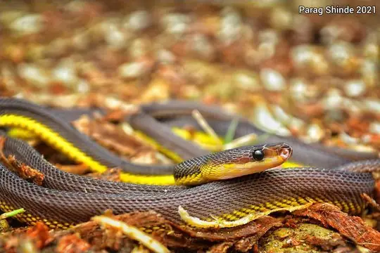
Lushai Hills Dragon SnakeStoliczkia vanhnuailianai- No photo yetMackinnon's Wolf SnakeLycodon mackinnoni
 MacLelland's Coral SnakeSinomicrurus macclellandi
MacLelland's Coral SnakeSinomicrurus macclellandi- No photo yetMadura Earth SnakeUropeltis madurensis
 Malabar Pit ViperCraspedocephalus malabaricus
Malabar Pit ViperCraspedocephalus malabaricus Malabar WhipsnakeAhaetulla malabarica
Malabar WhipsnakeAhaetulla malabarica Malayan Banded Wolf SnakeLycodon subcinctus
Malayan Banded Wolf SnakeLycodon subcinctus Mandarin RatsnakeEuprepiophis mandarinus
Mandarin RatsnakeEuprepiophis mandarinus Many-banded Tree SnakeBoiga multifasciata
Many-banded Tree SnakeBoiga multifasciata Many-spotted Cat SnakeBoiga multomaculata
Many-spotted Cat SnakeBoiga multomaculata Maya's pit viperTrimeresurus mayaae
Maya's pit viperTrimeresurus mayaae Mizo rain snakeSmithophis atemporalis
Mizo rain snakeSmithophis atemporalis Mock CobraPseudoxenodon macrops
Mock CobraPseudoxenodon macrops Modest KeelbackHebius modestus
Modest KeelbackHebius modestus Monocled CobraNaja kaouthia
Monocled CobraNaja kaouthia Mountain Worm-eating SnakeTrachischium monticola
Mountain Worm-eating SnakeTrachischium monticola Nagarkot Kukri SnakeOligodon erythrogaster
Nagarkot Kukri SnakeOligodon erythrogaster- No photo yetNamsang Kukri SnakeOligodon erythrorhachis
 Nepal PitviperTrimeresurus septentrionalis
Nepal PitviperTrimeresurus septentrionalis Nicobar Cat SnakeBoiga wallachi
Nicobar Cat SnakeBoiga wallachi- No photo yetNicobar Island KeelbackHebius nicobariensis
- No photo yetNikhil's Kukri SnakeOligodon nikhili
 Nilgiri Burrowing SnakePlectrurus perroteti
Nilgiri Burrowing SnakePlectrurus perroteti Nilgiri burrowing snakePlecturus perroteti
Nilgiri burrowing snakePlecturus perroteti- No photo yetNilgiri Hills Worm SnakeGerrhopilus tindalli
- No photo yetNilgiri KeelbackHebius beddomei
 Northeastern Hill KraitBungarus bungaroides
Northeastern Hill KraitBungarus bungaroides Northern Red-necked KeelbackRhabdophis helleri
Northern Red-necked KeelbackRhabdophis helleri Northern Vine SnakeAhaetulla borealis
Northern Vine SnakeAhaetulla borealis Ocellated Earth SnakeUropeltis ocellata
Ocellated Earth SnakeUropeltis ocellata Olive Keelback Wart SnakeAtretium schistosum
Olive Keelback Wart SnakeAtretium schistosum Olive Oriental Slender SnakeTrachischium laeve
Olive Oriental Slender SnakeTrachischium laeve Olive Trapezoid SnakeRhabdops olivaceus
Olive Trapezoid SnakeRhabdops olivaceus Orange-collared KeelbackRhabdophis himalayanus
Orange-collared KeelbackRhabdophis himalayanus Oriental RatsnakePtyas mucosa
Oriental RatsnakePtyas mucosa Ornate Sea SnakeHydrophis ornatus
Ornate Sea SnakeHydrophis ornatus Painted Keelback (cerasogaster)Xenochrophis cerasogaster
Painted Keelback (cerasogaster)Xenochrophis cerasogaster- No photo yetPalni Mountain Burrowing SnakeTeretrurus rhodogaster
 Palni ShieldtailUropeltis pulneyensis
Palni ShieldtailUropeltis pulneyensis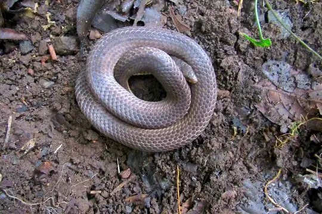
Perrotet's Mountain SnakeXylophis perroteti- No photo yetPeters' Sea SnakeHydrophis bituberculatus
 Phipson's ShieldtailUropeltis phipsonii
Phipson's ShieldtailUropeltis phipsonii Pirmad Cat SnakeBoiga dightoni
Pirmad Cat SnakeBoiga dightoni Plin's Banded RacerPlatyceps plinii
Plin's Banded RacerPlatyceps plinii Pope's Bamboo Pit ViperTrimeresurus popeiorum
Pope's Bamboo Pit ViperTrimeresurus popeiorum- No photo yetPurple-red Earth SnakeTeretrurus sanguineus
 Radiated RatsnakeCoelognathus radiatus
Radiated RatsnakeCoelognathus radiatus Rainbow Mud SnakeEnhydris enhydris
Rainbow Mud SnakeEnhydris enhydris- No photo yetRajendran’s Shieldtail snakeUropeltis rajendrani
 Red Bamboo SnakeOreocryptophis porphyraceus
Red Bamboo SnakeOreocryptophis porphyraceus Red-lined Earth SnakeUropeltis rubrolineata
Red-lined Earth SnakeUropeltis rubrolineata Red-spotted Diadem SnakeSpalerosophis arenarius
Red-spotted Diadem SnakeSpalerosophis arenarius Red-spotted Earth SnakeUropeltis rubromaculata
Red-spotted Earth SnakeUropeltis rubromaculata Reticulated PythonMalayopython reticulatus
Reticulated PythonMalayopython reticulatus Rosebelly Worm-eating SnakeTrachischium guentheri
Rosebelly Worm-eating SnakeTrachischium guentheri Rough-tailed Sand BoaEryx conicus
Rough-tailed Sand BoaEryx conicus Royal snakeSpalerosophis atriceps
Royal snakeSpalerosophis atriceps Russell's ViperDaboia russelii
Russell's ViperDaboia russelii Sahyadri Vine SnakeAhaetulla sahyadrensis
Sahyadri Vine SnakeAhaetulla sahyadrensis Salazar's Pit ViperTrimeresurus salazar
Salazar's Pit ViperTrimeresurus salazar Salty Earth SnakeRhinophis sanguineus
Salty Earth SnakeRhinophis sanguineus- No photo yetSamagutin Worm SnakeIndotyphlops tenuicollis
 Sand Snake (condanarus)Psammophis condanarus
Sand Snake (condanarus)Psammophis condanarus Saw-scaled ViperEchis carinatus
Saw-scaled ViperEchis carinatus- No photo yetScarce Bridal SnakeLycodon gracilis
 Sharma's RacerPlatyceps bholanathi
Sharma's RacerPlatyceps bholanathi Shevaroy HilIs Earth SnakeUropeltis shorttii
Shevaroy HilIs Earth SnakeUropeltis shorttii- No photo yetShieldtail Earth SnakeUropeltis petersi
 Shore Pit ViperTrimeresurus purpureomaculatus
Shore Pit ViperTrimeresurus purpureomaculatus Short Sea SnakeHydrophis curtus
Short Sea SnakeHydrophis curtus Shorthead Kukri SnakeOligodon brevicauda
Shorthead Kukri SnakeOligodon brevicauda Siebold's Mud SnakeFerania sieboldii
Siebold's Mud SnakeFerania sieboldii Sikkim KeelbackHerpetoreas sieboldii
Sikkim KeelbackHerpetoreas sieboldii Sind KraitBungarus sindanus
Sind KraitBungarus sindanus Sindh Awl-headed SnakeLytorhynchus paradoxus
Sindh Awl-headed SnakeLytorhynchus paradoxus Sindh Thread SnakeMyriopholis blanfordi
Sindh Thread SnakeMyriopholis blanfordi Sirumalai Hills Earth SnakeUropeltis dindigalensis
Sirumalai Hills Earth SnakeUropeltis dindigalensis Sistan Sand BoaEryx sistanensis
Sistan Sand BoaEryx sistanensis- No photo yetSlender Worm SnakeIndotyphlops porrectus
 Smith's Earth SnakeUropeltis grandis
Smith's Earth SnakeUropeltis grandis South Andaman KraitBungarus andamanensis
South Andaman KraitBungarus andamanensis- No photo yetSouth India Worm SnakeIndotyphlops pammeces
 Southern BronzebackDendrelaphis grandoculis
Southern BronzebackDendrelaphis grandoculis- No photo yetSouthern Earth SnakeUropeltis nitida
 Southern Large-scaled pit viperCraspedocephalus peltopelor
Southern Large-scaled pit viperCraspedocephalus peltopelor Spotted Earth SnakeUropeltis maculata
Spotted Earth SnakeUropeltis maculata Spotted Slug SnakePareas macularius
Spotted Slug SnakePareas macularius St. John's KeelbackFowlea sanctijohannis
St. John's KeelbackFowlea sanctijohannis Stoke's SeasnakeHydrophis stokesii
Stoke's SeasnakeHydrophis stokesii Stolickza's RingneckLiopeltis stoliczkae
Stolickza's RingneckLiopeltis stoliczkae Stoliczk's Tawny Cat SnakeBoiga stoliczkae
Stoliczk's Tawny Cat SnakeBoiga stoliczkae Striped Sea SnakeHydrophis fasciatus
Striped Sea SnakeHydrophis fasciatus- No photo yetSushanta’s Worm-eating SnakeTrachischium sushantai
 Suzhen’s kraitBungarus suzhenae
Suzhen’s kraitBungarus suzhenae- No photo yetTamil Nadu Earth SnakeRhinophis travancoricus
 Taron KeelbackHebius taronensis
Taron KeelbackHebius taronensis- No photo yetTawny Cat Snake (ochracea)Boiga ochracea
 Tentacled SnakeErpeton tentaculatum
Tentacled SnakeErpeton tentaculatum Thackeray's cat snakeBoiga thackerayi
Thackeray's cat snakeBoiga thackerayi Theobald's Kukri SnakeOligodon theobaldi
Theobald's Kukri SnakeOligodon theobaldi- No photo yetThree-cusped uropeltisUropeltis tricuspida
- No photo yetThurston's Worm SnakeGerrhopilus thurstoni
 Tillack's Kukri SnakeOligodon tillacki
Tillack's Kukri SnakeOligodon tillacki Tirunelveli Earth SnakeUropeltis arcticeps
Tirunelveli Earth SnakeUropeltis arcticeps Tiwar's BronzebackDendrelaphis humayuni
Tiwar's BronzebackDendrelaphis humayuni Travancore Hills Thorntail SnakePlatyplectrurus madurensis
Travancore Hills Thorntail SnakePlatyplectrurus madurensis Travancore Kukri SnakeOligodon travancoricus
Travancore Kukri SnakeOligodon travancoricus Travancore Pit ViperCraspedocephalus travancoricus
Travancore Pit ViperCraspedocephalus travancoricus Travancore WhipsnakeAhaetulla travancorica
Travancore WhipsnakeAhaetulla travancorica Travancore Wolf SnakeLycodon travancoricus
Travancore Wolf SnakeLycodon travancoricus Trinket SnakeCoelognathus helena
Trinket SnakeCoelognathus helena Twin-spotted Wolf SnakeLycodon jara
Twin-spotted Wolf SnakeLycodon jara Two-lined Black Earth SnakeMelanophidium bilineatum
Two-lined Black Earth SnakeMelanophidium bilineatum Vellore Bridal SnakeLycodon nympha
Vellore Bridal SnakeLycodon nympha Viperine Sea SnakeHydrophis viperinus
Viperine Sea SnakeHydrophis viperinus Wadi RacerPlatyceps rhodorachis
Wadi RacerPlatyceps rhodorachis Wall's BronzebackDendrelaphis cyanochloris
Wall's BronzebackDendrelaphis cyanochloris Wall's KeelbackHerpetoreas xenura
Wall's KeelbackHerpetoreas xenura Wall's Sind KraitBungarus walli
Wall's Sind KraitBungarus walli Wall's Vine SnakeAhaetulla isabellina
Wall's Vine SnakeAhaetulla isabellina Wallace's RacerWallaceophis gujaratensis
Wallace's RacerWallaceophis gujaratensis Walnut Kukri SnakeOligodon juglandifer
Walnut Kukri SnakeOligodon juglandifer Water RhabdopsRhabdops aquaticus
Water RhabdopsRhabdops aquaticus Wayanad Earth SnakeRhinophis melanoleucus
Wayanad Earth SnakeRhinophis melanoleucus Western bamboo pit viperCraspedocephalus occidentalis
Western bamboo pit viperCraspedocephalus occidentalis Western Ghats BronzebackAhaetulla perroteti
Western Ghats BronzebackAhaetulla perroteti Whitaker's BoaEryx whitakeri
Whitaker's BoaEryx whitakeri White-banded Wolf SnakeLycodon septentrionalis
White-banded Wolf SnakeLycodon septentrionalis White-lipped PitviperTrimeresurus albolabris
White-lipped PitviperTrimeresurus albolabris- No photo yetWoodmason's Earth SnakeUropeltis woodmasoni
 Woodmason's Kukri SnakeOligodon woodmasoni
Woodmason's Kukri SnakeOligodon woodmasoni- No photo yetWynad KeelbackHebius monticola
 Yellow Sea SnakeHydrophis spiralis
Yellow Sea SnakeHydrophis spiralis Yellow striped SnakeCoelognathus flavolineatus
Yellow striped SnakeCoelognathus flavolineatus Yellow-bellied Sea SnakeHydrophis platurus
Yellow-bellied Sea SnakeHydrophis platurus Yellow-collared Wolf SnakeLycodon flavicollis
Yellow-collared Wolf SnakeLycodon flavicollis Yellow-green Cat SnakeBoiga flaviviridis
Yellow-green Cat SnakeBoiga flaviviridis Yellow-lipped Sea KraitLaticauda colubrina
Yellow-lipped Sea KraitLaticauda colubrina Yellow-Lipped Sea KraitLaticauda saintgironsi
Yellow-Lipped Sea KraitLaticauda saintgironsi Yellow-lipped Sea SnakeLaticauda frontalis
Yellow-lipped Sea SnakeLaticauda frontalis Yellow-spotted Wolf SnakeLycodon flavomaculatus
Yellow-spotted Wolf SnakeLycodon flavomaculatus Yellowbelly Worm-eating SnakeTrachischium tenuiceps
Yellowbelly Worm-eating SnakeTrachischium tenuiceps Yunnan Annulate KeelbackTrimerodytes yunnanensis
Yunnan Annulate KeelbackTrimerodytes yunnanensis Yunnan keelbackHebius clerki
Yunnan keelbackHebius clerki- No photo yetYunnan KeelbackHebius parallelum
 Yunnan Pit ViperTrimeresurus yunnanensis
Yunnan Pit ViperTrimeresurus yunnanensis Zaw's Wolf SnakeLycodon zawi
Zaw's Wolf SnakeLycodon zawi Zayuan mountain pitviperOvophis zayuensis
Zayuan mountain pitviperOvophis zayuensis Ahaetulla oxyrhyncha
Ahaetulla oxyrhyncha Blythia hmuifang
Blythia hmuifang- No photo yetBoiga whitakeri
- No photo yetHydrophis pachycercos
- No photo yetPareas kaduri
- No photo yetPseudoboa krait
- No photo yetSinomicrurus nigriventer
- No photo yetTrimeresurus macrolepis
No snakes in India match.
India’s snakes in numbers
- Families: Colubridae 174, Elapidae 53, Uropeltidae 47, Viperidae 40, Typhlopidae 12, Pareidae 10, Homalopsidae 9, Gerrhopilidae 5, Psammophiidae 4, Boidae 3, Pythonidae 3, Xenodermidae 2, Leptotyphlopidae 1, Pseudaspididae 1.
- 151 are recorded in no other country in SnakeList: Anamala Pit Viper, Anamalai wood snake, Anamally Earth Snake, Andaman Bronze-back, Andaman Cat Snake, Andaman Cobra, Andaman Keelback, Andaman pitviper, Andaman wolf snake, Andaman Wolf Snake, Andaman Worm Snake, Apte’s slender snake and 139 more.